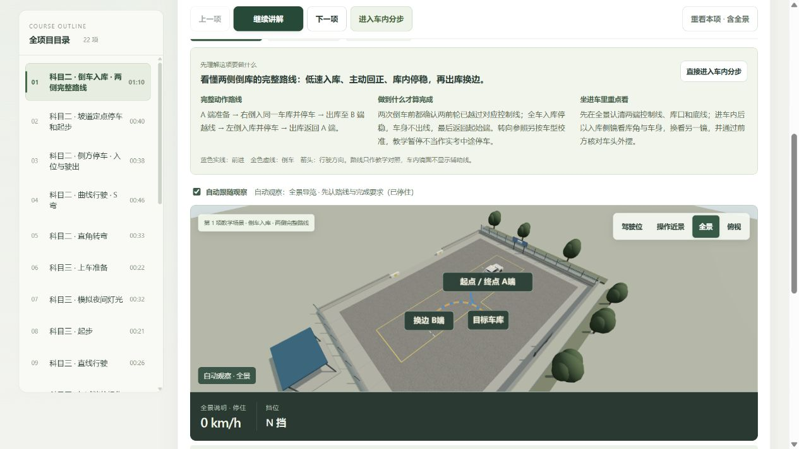
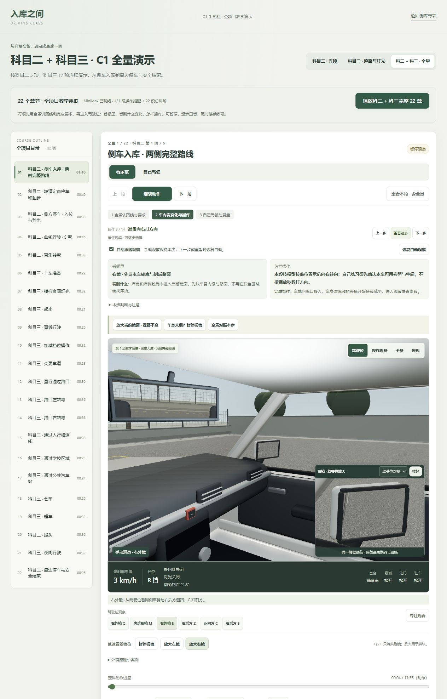
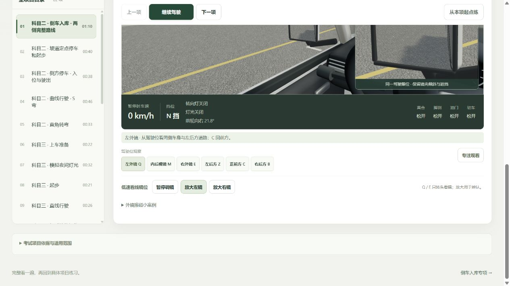
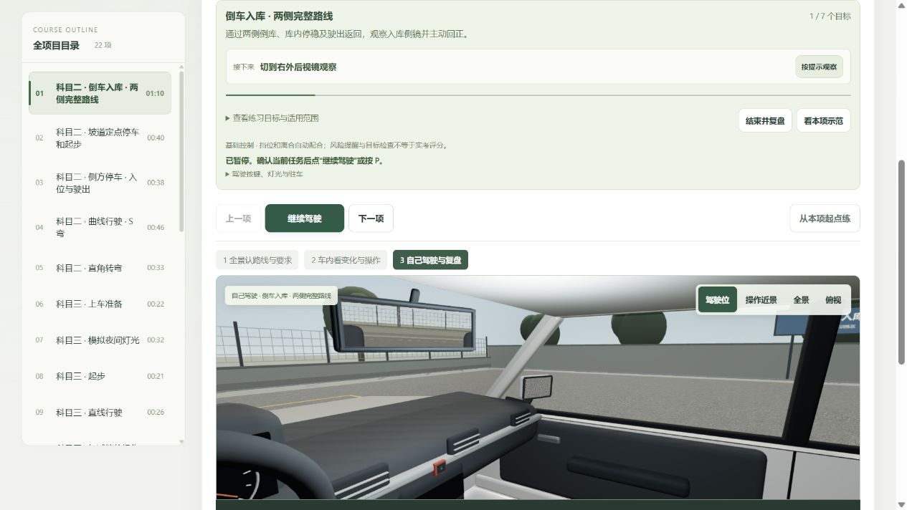
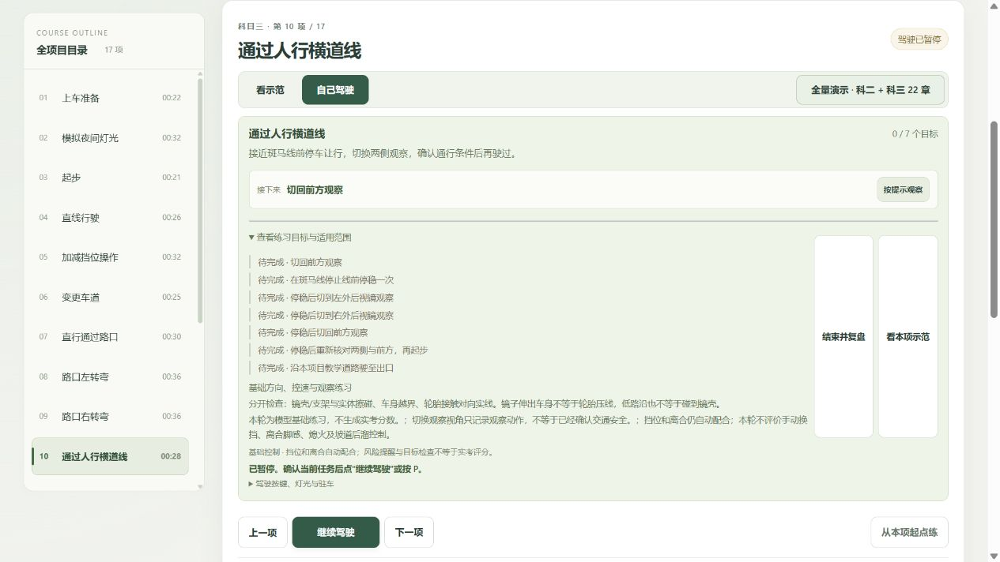

2026-10-25 · 仅分析，未修改产品代码。恢复了停止的本地预览服务；用户原有首页与演示进度保留。
结论：可以体验全量演示与基础练习，仍不能算训练完善。本轮实际页面核对及源码、纯模块复现发现了观察目标、完成判断、练习往返状态的确定缺陷。已有426项回归通过，不代表这些未覆盖情形已经正确。
| 流程步骤 | 当前状态 | 主要判断 |
|---|---|---|
| 1 全景开场 | 基本可用 | 路线、要求、暂停、分步入口清楚；详细新指南仍主要靠阅读，未完整进入旧语音。 |
| 2 镜面辨认与动作 | 需要优先标定 | 默认停车右镜的本车边缘过窄，放大后仍难辨认；镜域能容纳参照也不等于真实画面可辨。 |
| 3 练习 ↔ 示范 | 有状态恢复缺陷 | 左镜练习去看示范，再返回后变成右镜；车辆和目标进度恢复了，观察状态没恢复。 |
| 4 章目标与复盘 | 有教学逻辑和达标误判 | 外镜替代横向前方观察；变道、低速区目标的完成条件过松。展开目标后按钮也有被纵向拉长的问题。 |
路口与人行横道的练习要求使用 left/right，实际含义是左右外后视镜。斑马线停车后清单明确要求“停稳后切到左/右外后视镜观察”，重新起步还依赖这些记录。新的教学文字则要求关注前方两侧行人与横向冲突。两者不一致，可能让新手误以为点过两面外镜就完成了横向路口检查。
建议分别定义前方左/右扫视、左右外镜、肩后盲区，按具体冲突对象验收。源码：F:/codex_project/1020_codex_project/projects/012-parking-lab/src/course-practice.js:59、:66。
F:/codex_project/1020_codex_project/projects/012-parking-lab/src/course-practice.js:319。zoneSlow ||=使一次短暂满足就永久点亮。这里说的是违反本模型的低速保持目标，不是认定28.8km/h必然违反某地法定限速。定位：同文件:345。建议用整车包络、明确路段范围与持续过程判断；提前准备、区域内保持、驶离后恢复分别记录。练习完成与正式考试合格仍需分开。
当前实际放大画面依然以近处柏油为主，本车参照是很细的内缘。本轮几何双段射线复测得到默认右停车镜位真实可见车身约1.82%，部分车身反射被实体镜框挡住；这不是隐藏了整辆车，也未发现确定的左右翻转错误。现有主要镜面样本侧重道路镜位，停车镜位的辨认覆盖还不够。
建议按驾驶眼位→镜片→参照的真实遮挡和实际显示像素标定停车镜位，分开判断“镜域外、被挡住、只有很短一段、足够辨认”。保留真实眼位与镜域，教学放大继续明确标注。当前提示主要用负向几何结果降级，自己驾驶阶段尚未提供相同可见性提示；近体凸镜仍为工程近似。本轮代表性的左右回正时刻侧线仍可见，未发现新的左右纠偏指令反转。
浏览器已复现：左镜练习→看本项示范（自动右镜）→回到刚才练习，车辆、暂停和1/7进度恢复，观察仍为右镜。practiceReturn只保存会话和车辆，没有保存view/gaze。建议连同视角、看镜方向、可选放大和镜位一起保存/恢复。定位：F:/codex_project/1020_codex_project/projects/012-parking-lab/src/full-courses.js:364、:375。
新增标准、可见变化和完成条件是文字指南，MiniMax仍播放旧概述/短提醒，尚不是完整逐条件语音教学。全景会显示静止0km/h/N挡，部分行驶章节切回同位置片段后立即恢复其原车速和挡位；虽然标为“该时刻车速”，新手仍需要“现在接续一段已在行驶的示范，讲解时冻结”的明确解释。这是呈现问题，不能称为真实物理瞬间加速。
展开清单后，“结束并复盘/看本项示范”按钮被纵向拉长成高柱，文字也较密。建议一次突出当前观察对象、判断条件、一个主动作；其他说明按需展开。小字、阅读顺序与键盘切镜需要进一步验证，不能仅凭本轮截图宣称符合完整无障碍标准。
当前驾驶模式自动配合挡位和离合，未训练真实半联动脚感、手动换挡熟练度、熄火及后溜控制。道路场景是分章的固定教学片段，尚非某地实测连续考试路线或完整随机交通决策训练。可以用于认识流程与练基础方向，暂不能评价完整C1实操能力。
当前全景暂停、路线与要求同屏，原进度未操作。





本轮捕获全景、镜面、练习往返、斑马线清单，结合源码及纯模块复现；没有修改产品代码，没有将已有426测试重新全跑。未逐章人工听完143段语音，未完整验证移动端、低性能设备、所有交通参与者和全部碰撞边界。
新开页曾因本地预览停止而连接失败，已恢复预览并在新标签页成功加载；未改用户原有两个标签页的练习状态。这是本地运行恢复，不代表已实现正式安装包、开机启动或服务自动恢复。
建议下一轮：先统一观察目标、收紧完成判定，再做停车镜位辨认标定，随后补状态恢复和语音/页面同步。